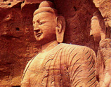
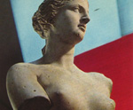

呂清夫 撰文


其所以如此，正如林語堂所說：「中國和西方的學問之間，最大的對比就是：西方太多專門知識，而太少近於人情的之事；至於中國則富於對生活問題的關切，而歉於科學。」不過這裡所謂的科學據林氏指出，是指一般意義上的科學，而不是真正的科學思想，「因為真正的科學思想是不能從常識和幻想分析開來的」，在這一點上言，中國人仍舊有其科學思想。至於中國之所以較少專門化的知識，那是因為「中國人對於邏輯的不信任，起點於不信任字眼，再而懼怕界說，最後則對一切系統、一切假說表示天性的憎恨。因為使哲學派別成為可能者，都是字眼、界說和系統的罪惡。哲學的腐化起於對字眼的偏見。」又說：「……一個真理等到被豎立成為一個系統時，它已死了三次，並被埋葬了三次時。他們在真理出喪時所唱的輓歌是：『我完全是對的，而你則是完全錯誤的。』……」。此所以中國不像西方那樣建立體系分明的哲學與美學。但是如再追本溯源，尚可追溯到莊子等人的看法。莊子最怕天下大亂，聖賢都隱藏起來，於是百家各倡其說，天下人多半祇持偏見，互相誇大，譬如眼耳口鼻各有專用，可是不能互相通用，因之派別不同的學問，境界不同的技能雖然各有所長，卻往往祇知其一不知其二，各走極端，執迷不悟，於是無法看到「天地之純，古人之大體」。至於西方體系分明的學問發展到後來，自然促成了機械文明的出現，這是一種分工最細的文明，人類變成螺絲釘一般，不清楚自己工作的性質為何物，人對工作有如摸象的瞎子，機械本來是為人類而效勞，至此，人類又可能淪為機械的附庸。對於這種危險性，莊子也早就一眼看出，他曾說過一個中外聞名的故事，其中提到有一回子貢從南方北返，在半路上看到一個農夫，抱著甕到井中取水，要用來灌田，事倍而功半，子貢於是問他說：「你為什麼不用桔槔（槓桿，圖34）呢？那是比較省力的。」農夫回答說：「我不是不知道，我祇是恥於用它，因為使用機械，必有機心，人一有機心，便會失去純真。」 1.西方理性主義的黃昏 這個故事乍看是反科學的，但是卻使資訊理論家麥克魯漢、及物理學家海森堡（Heisenberg）大為欣賞。因為機械如果代表理性的話，那麼理性主義在現代科學的發展之下已發生了動搖，威廉巴拉曾說：「一百五十年前，哲學家康德曾想表示，理性有著無可避免的限制，但是祇有當這個結論在科學本身中表現出來時，才能希望那徹底屬於實證主義者的西方人重視這個結論。本世紀的科學終於證實了康德的看法：差不多同一個時候，海森堡在物理學方面，哥德耳（Godel）在數學方面，都指出人類理性的無可避免的限制。海森堡的不定性原理，表示人類在認知和預測物質狀態之能力方面的根本限制……。」這一類為西方理性主義趨於奔潰找病因的著作還很多，而理性主義的動搖正是西方傳統藝術的動搖，正是希臘羅馬及文藝復興傳統的動搖，同時也是他們走向現代藝術的入口。卡素在其著作「二十世紀的泉源」（J. Cassou : Les Sources du vingtieme, Paris, 1916）曾慨然指出， 西方現代與傳統的鴻溝肇始於下列三個思想，其一是愛因斯坦的相對論，其二是佛洛依德的精神分析，其三是在物質構造與「能」觀念中導入「不連續」概念的普蘭克（Max Planck）之量子力學，它們都是二十世紀思想不安與動盪的震源。山鳥田厚在其「設計的哲學」中亦指出，西方的理性主義到了十九世紀末，已在各方面趨於崩潰，他說：「正如尼采所昭告的，人類對於確固的現實及客觀的法則一旦失去信賴，實在論將轉化成虛無主義。…京梅爾（G. Simmel）、伯格森的生命哲學、詹姆士（W. James）的實用主義，更積極肯定了虛無狀態中的人類主義之意義，並以這種潮流的代表者而出現。至於為其後變成藝術運動的超現實主義鋪路的佛洛依德之革命思想，亦可視為其中的一環，對於客觀的懷疑自然導群主觀與精神、人類內在生命的種種可能性之重視……。另一方面，如眾所周知，這種轉變亦可見諸自然科學的領域。一方面是波諳卡列的『科學與假設』（J. H. Poincar'e : La Science et l'hypothese，1902），他方面是愛因斯坦的『相對論』，它們都對十九世紀以前為近代世界觀奠基的牛頓之機械論自然觀作了重大的修正。」西方科學和哲學中所發生的這些現象表示西方思想方式的改變，至於感覺方式的改變則可見諸近代藝術。近代藝術曾在理性主義以外的文化傳統中去尋找靈感，而東方藝術極為其著眼點之一，葛羅曼（W. Gromann）在評論康丁斯基（W. Kandinsky）時曾說：「理性無法掌握真正的現實（reality），因之，他試著借用直覺的力量來洞察現實，人不靠部分的累積，而靠直覺即可立刻理解一切的事物」。西方的造形藝術如希臘羅馬及文藝復興都屬於這個理性主義的傳統，祇有印象派以後，嚴格地說，應是野獸派以後才掙脫了理性主義的枷梏。然而這種理性的造形在中國是少見的，中國常見的是H. 里德所推崇的直覺造形，兩者剛好構成了有趣的對比，西方陶瓷比諸中國陶瓷，固然有著明顯的幾何學性格，西方石造建築亦比中國木造建築更多結構的限制。西方繪畫的透視學、解剖學、明暗學、比例論亦比中國繪畫更多作畫的拘絆，這些學院派的拘絆必須等到近代受過東方等地的影響以後，才開始掙脫出來。 2.中國的直覺造形 而中國的造形藝術向來不以因循刻板的院體派（相當於西方的學院派）為尚，卻以直抒性靈的個性派為高。中國人欣賞逸筆草草的水墨畫及類似自動技巧的書法，也喜歡線條自由的木版畫及牆面自由的木造建築。至於至宋瓷般的材質之美、太湖石般的不雕之璞、乃至中國造園般的天人合一更是中國審美觀中的理想，這些審美觀簡言之，都是人本主義的，人的個性、直覺、乃至潛意識都受到高度的重視，且不論純粹造形與實用造形，其最高境界的作品莫不如此。至於西洋之所以比中國更多工程浩大的建築、壁畫，乃因為西洋是以神為中心的，反之，中國是以人為中心的，例如中國繪畫或書法，莫不是在個人精神高度集中之下，一揮而就，在充分望我之際，下筆有如神助。所以中國具也高度精神性的造形藝術不但不能以規矩求之，也不能以堆砌、修改成之，向書法之類總是一次寫成，重新描過，便無氣韻而言。而且作品的成敗往往無法預料，有心求好常多敗筆，超然為之又常多佳構，亦即理性無法控制筆端，筆端自有其生命，平日蘊蓄既足，屆時筆端自有神助。這種情況是西方傳統的造形藝術所罕見，西方油畫往往可以理性成之，而且可以一改再改，成敗操之在我，少見潛意識的因素，或性靈的直接流露。關於中國造形藝術的這種情況，我們在「莊子」一輸的外篇可以找到不少的實例，雖然外篇可能為後人編纂或偽託之作，但仍不失為有力的古代文獻。在「莊子」田子方篇曾記載，送元君要圖書，許多畫師都來了，於是受命拜揖，站立一旁，濡筆調墨，準備大顯身手，由於人多，尚有一半的人站在門外。這時祇有一個畫師姍姍來遲，他雖然受命拜揖，卻不站立等待，隨即返回住所。元君派人去看，見他脫衣盤腿而坐。元君說：「可以了，他才是真正的畫家。」這裏面充分說明蘊蓄既足的人，不會拘泥技術的枝節，不會失去內心的平靜，常為自己保持絕對的自由，他為著創作的需要，故完全不拘小節，超越社會的禮儀，使自己解脫時間、空間的束縛。其所以赤裸，「莊子集解」中亦註明「司馬云將畫故解衣見形」，亦即為著培養創作的氣氛，為著獲得靈思的自由，可以想盡各種方法忘去自我，以期下筆如有神助，一氣呵成，使自己的個性或潛意識得到充分的流露。如是才能獲致生動的氣韻。不僅純粹造形有這種現象，實用造形亦不例外，在「莊子」達生篇中，亦記載魯國巨匠梓慶削木做鐻（樂器也），鐻成，觀者莫不驚為鬼斧神工，魯侯見了問說，「你用什麼技術做成的呢？」梓慶回答說：「我是工人，哪有什麼技術！祇有一點，那就是我做鐻的時候，不敢消耗精神，必定齋戒來靜心。齋戒三天，不敢存有慶賞爵祿之心；齋戒五天，不敢存有毀譽四肢身體。在這個時候，我自然忘了朝廷，於是用技專一，俗慮全消。然後進入山林，觀察樹木的本性，看到形態合用的，一個完全的鐻鐘便宛然呈現眼前。這時，我才下手施工，不是這樣我就不做。這是以我的本性來應合樹木的本性，鐻之所以被驚為神工，大概就是這個緣故。」這裏面說明了雖然是工匠，雖然做的事實用的器物，但是器之精者，其製作的心路歷程與書畫並無二致。工匠透過齋戒，來忘去俗慮，忘去自我，然後才有慧眼，得以發現適合的造形材料。這時材料與工匠並無不是對立的，而是融為一體的，材料甚至是工匠個性的投射。工匠並不將預定的形象硬加諸材料之上，而是順應材料的本性，器形自然呈現其中。似乎鐻鐘早就存在木材之中不需工匠的雕琢，工匠從木材做出鐻鐘，宛如從泥土中挖出石頭一般地，把鐻鐘從木材中掏出來，亦即鐻鐘的造形早就成定局，不是工匠有意為之而為，此誠為不折不扣的直覺造形。所以在此我們可將中西造形做個簡單的比較：| 中國造形 | 人為中心 | 直覺化 | 寫意 | 重材質 | 重自然 |
| 西方造形 | 神為中心 | 理性化 | 寫實 | 重表現 | 重人工 |